library(ggplot2)
library(dplyr)
Attaching package: 'dplyr'The following objects are masked from 'package:stats':
filter, lagThe following objects are masked from 'package:base':
intersect, setdiff, setequal, unionlibrary(ggplot2)
library(dplyr)
Attaching package: 'dplyr'The following objects are masked from 'package:stats':
filter, lagThe following objects are masked from 'package:base':
intersect, setdiff, setequal, unionggplot2 theme has four main components
theme() function which allows you to override the default theme elements by calling element functionsThere are around 40 unique elements that control the appearance of a plot. They can be roughly grouped into five categories: plot, axis, legend, panel and facet.
We will actively modify the base graph as we progress
df = data.frame(x = 1:3,
y = 1:3,
z = LETTERS[1:3])
base = ggplot(df, aes(x, y)) +
geom_point(size = 4) +
theme_minimal()
print(base)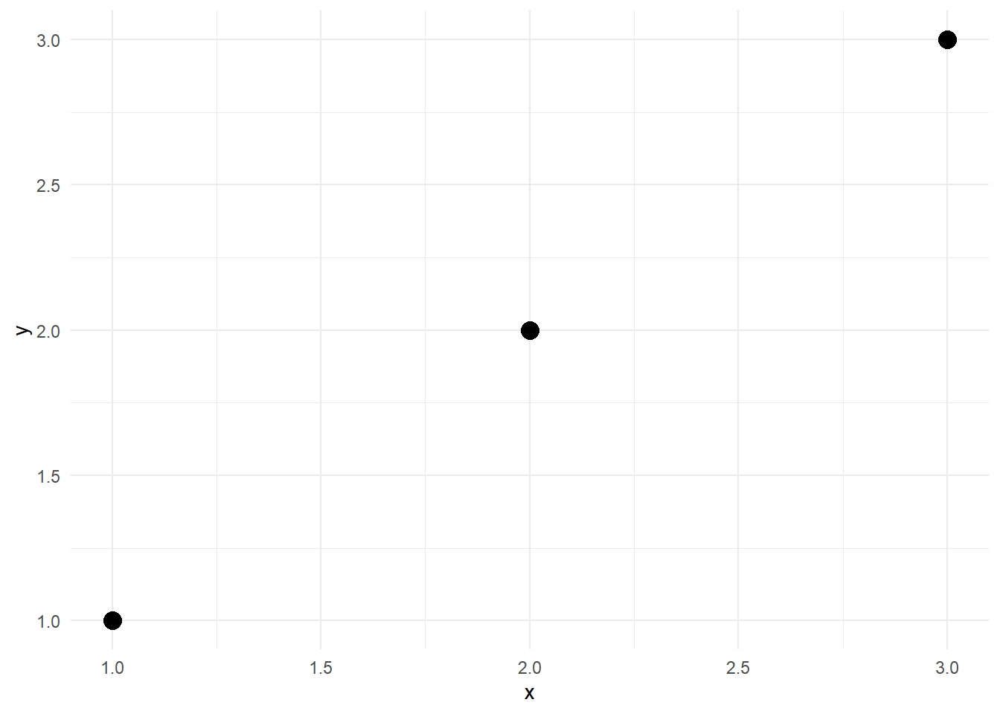
Both these elements are usually modified with setter function element_rect. Plot title and panel grid lines will be modified with element_text and element_line which I describe below when I discuss axes.
The syntax for element_rect looks like this:
# Don't run this code
element_rect(fill = NULL,
color = NULL,
linewidth = NULL,
linetype = NULL,
inherit.blank = FALSE)The options color, linewidth, and linetype pertain to the border around the rectangle.
base + theme(plot.background = element_rect(fill = "lightblue"))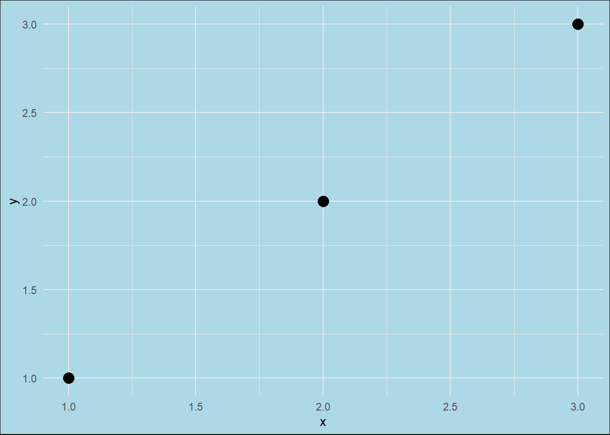
base + theme(panel.background = element_rect(fill = "lightblue"))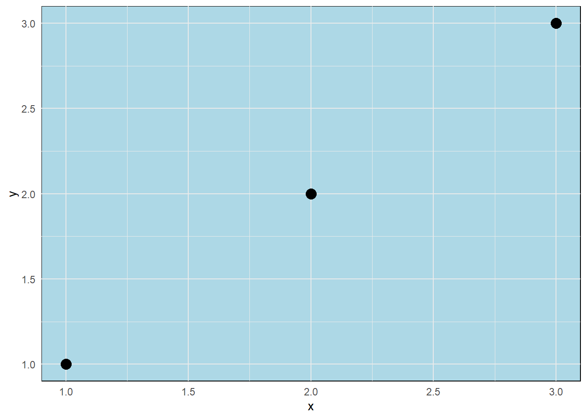
base + theme(plot.background = element_rect(fill = "hotpink"),
panel.background = element_rect(fill = "lightblue"))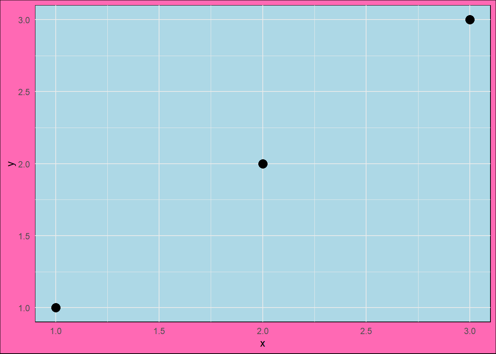
Let’s put a dark border around the plot
base + theme(plot.background = element_rect(fill = "pink",
color = "black",
linewidth = 3)) +
theme(panel.background = element_rect(fill = "lightblue"))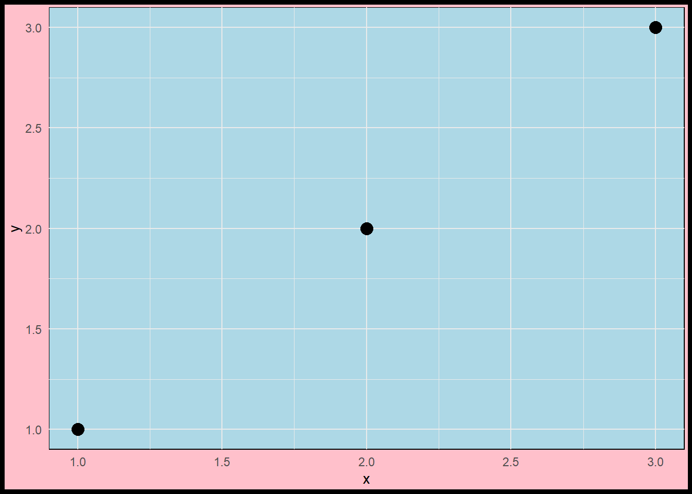
Change the linetype
base + theme(plot.background = element_rect(fill = "pink",
color = "black",
linewidth = 3,
linetype = "dashed")) +
theme(panel.background = element_rect(fill = "lightblue"))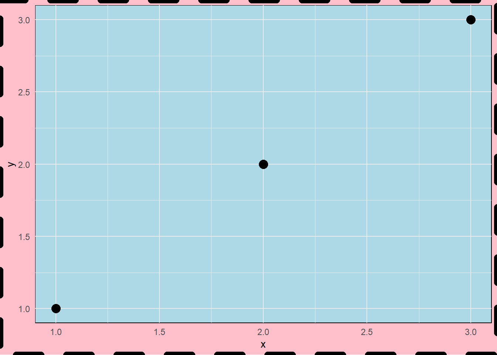
You can adjust the major and minor gridlines with element_line function
base + theme(panel.grid.major = element_line(color = "blue",
linewidth = 2,
linetype = "dashed"))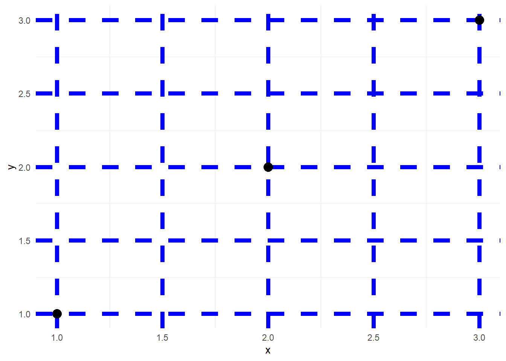
base + theme(panel.grid.minor = element_line(color = "blue",
linewidth = 2,
linetype = "dashed")) +
theme(panel.grid.major = element_line(color = "black",
linewidth = 2,
linetype = "dashed"))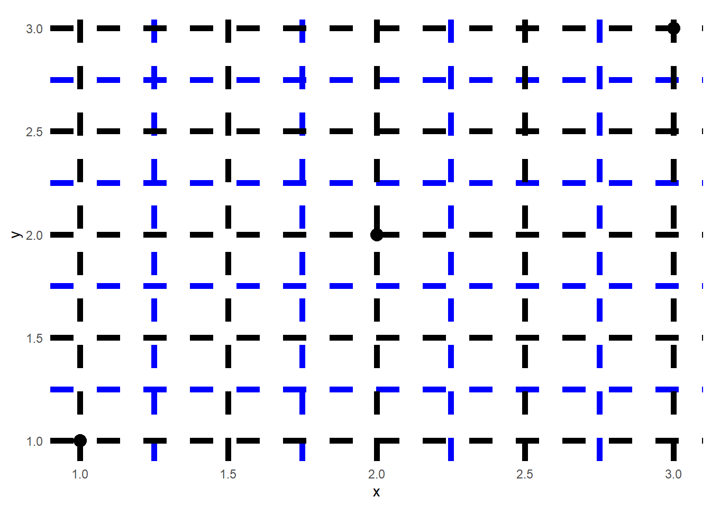
For many professional applications it is important to set the aspect ratio of the panel so that the graph looks the same no matter where you print it. Flexible aspect ratio may lead to unnecessary stretching or compressing of axes.
base + theme(aspect.ratio = 0.75)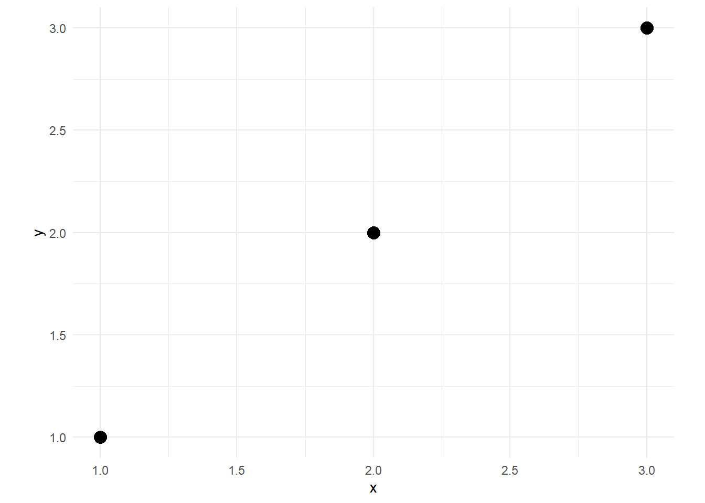
Axes have two commonly used setter functions: element_text and element_line
The first is used for modifying all sort of axis text including axis title and tick text. The latter is used for the axis and tick lines.
The synatx for the two functions is as follows:
element_text(family = NULL, face = NULL, colour = NULL, linewidth = NULL,
hjust = NULL, vjust = NULL, angle = NULL, lineheight = NULL,
color = NULL, margin = NULL, debug = NULL, inherit.blank = FALSE)
element_line(colour = NULL, linewidth = NULL, linetype = NULL,
lineend = NULL, color = NULL, arrow = NULL, inherit.blank = FALSE)
# where arrow describes the arrow head with the function arrow() with the following syntax
arrow(angle = 30, length = unit(0.25, "inches"),
ends = "last", type = "open")The default ggplot2 doesn’t have a line with arrow on the X or Y axis. Let’s put it there.
base + theme(axis.line = element_line(arrow = arrow(angle = 15,
length = unit(.15, "inches"),
type = "open")))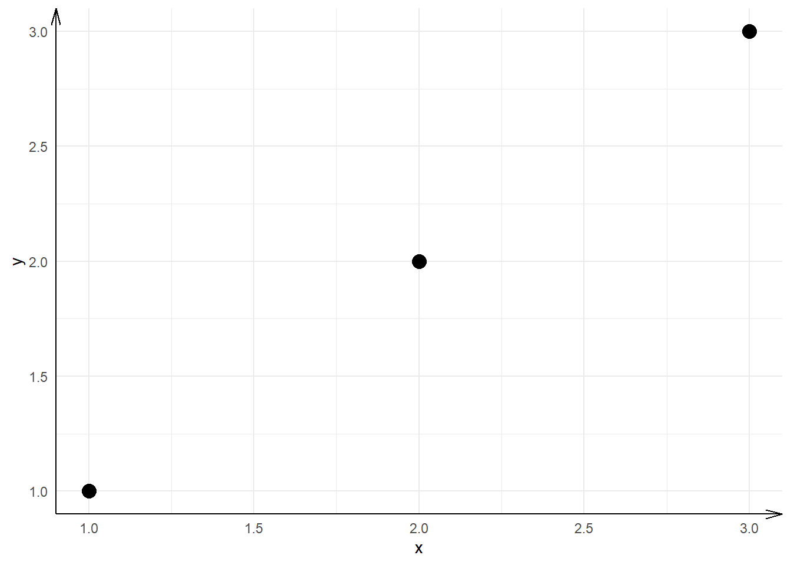
Modify axis ticks
base + theme(axis.ticks = element_line(color = "red"),
axis.ticks.length = unit(10, units = "pt"),
axis.text = element_text(face = "bold",
size = 12,
angle = 30))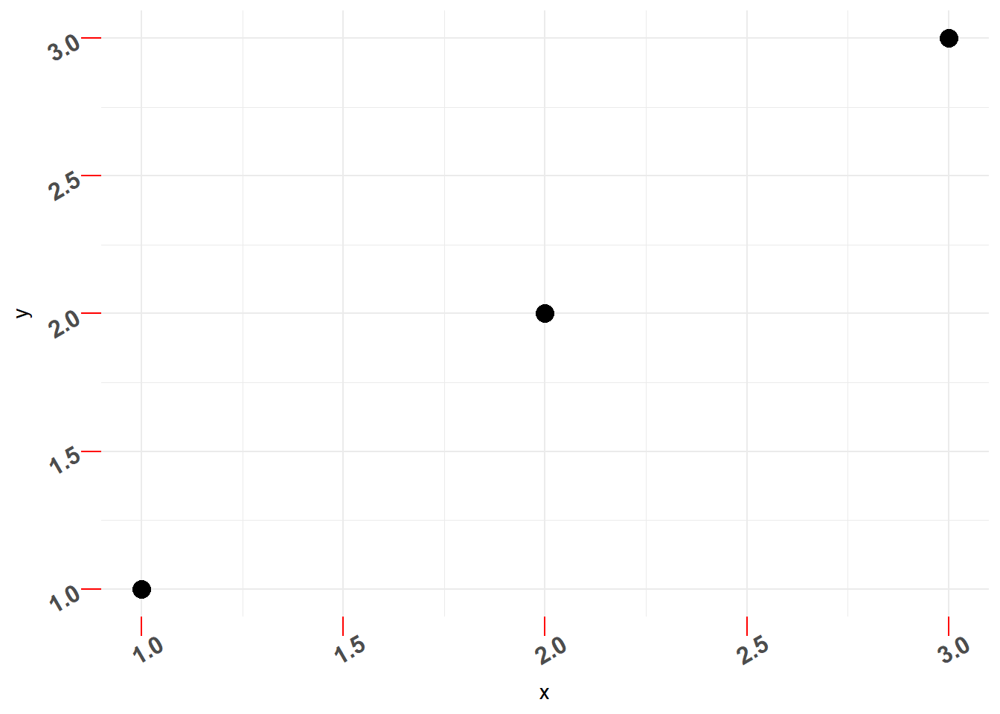
base + geom_point(aes(color = z), size = 4) +
theme(legend.key = element_blank(),
legend.background = element_blank(),
legend.title.align = 1,
legend.position = c(0.1, 0.5))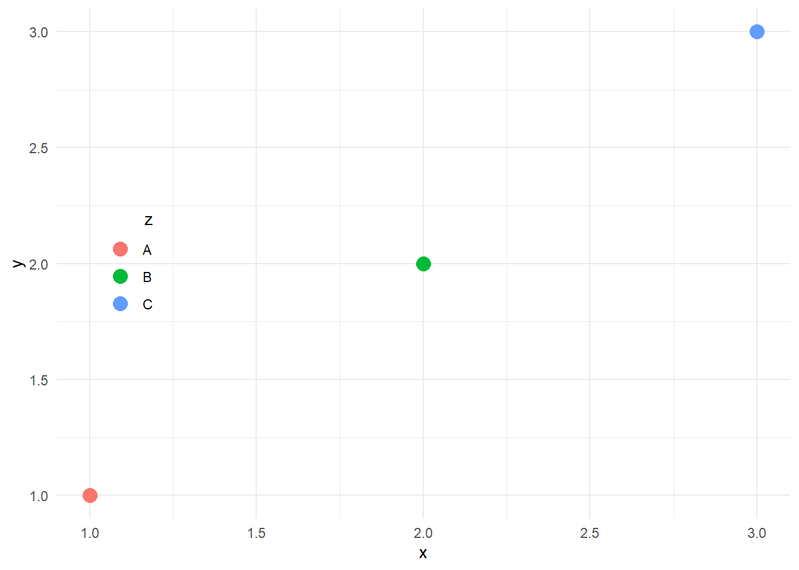
p1 = base + geom_point(aes(color = z), size = 4) +
scale_color_manual(values = c("red", "blue", "hotpink")) +
theme(legend.key = element_rect(fill = "gray70"),
legend.background = element_rect(fill = "gray90", color = "white"),
legend.title.align = 1,
legend.position = c(0.9, 0.5))Get ggthemes and cowplot and play with the themes
ggplot2 has its own inbuilt ggsave function that we will use
# vector graphics
ggsave("plot01_2023-09-26.svg")
ggsave("plot01_2023-09-26.pdf", plot = p1,
width = 11.5,
height = 8.5,
dpi = 600)
# raster graphics
ggsave("plot01_2023-09-26.png", plot = p1,
width = 11.5,
height = 8.5,
dpi = 600,
bg = "white")